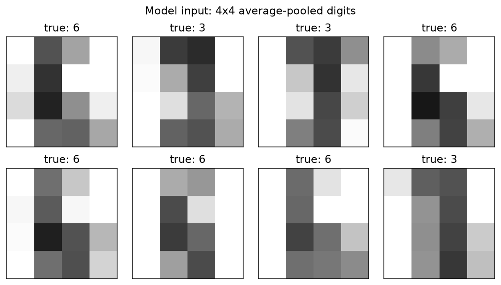
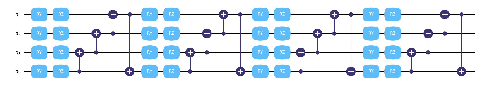
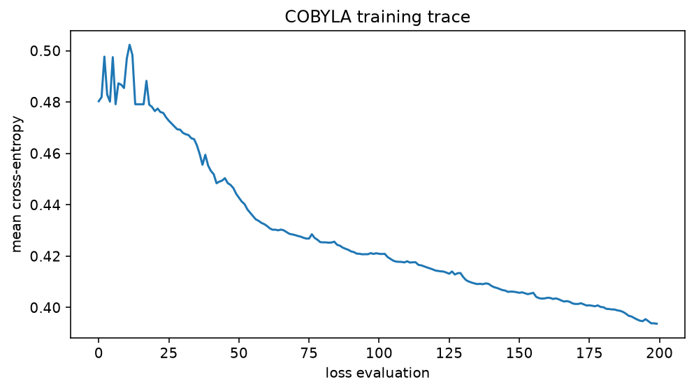
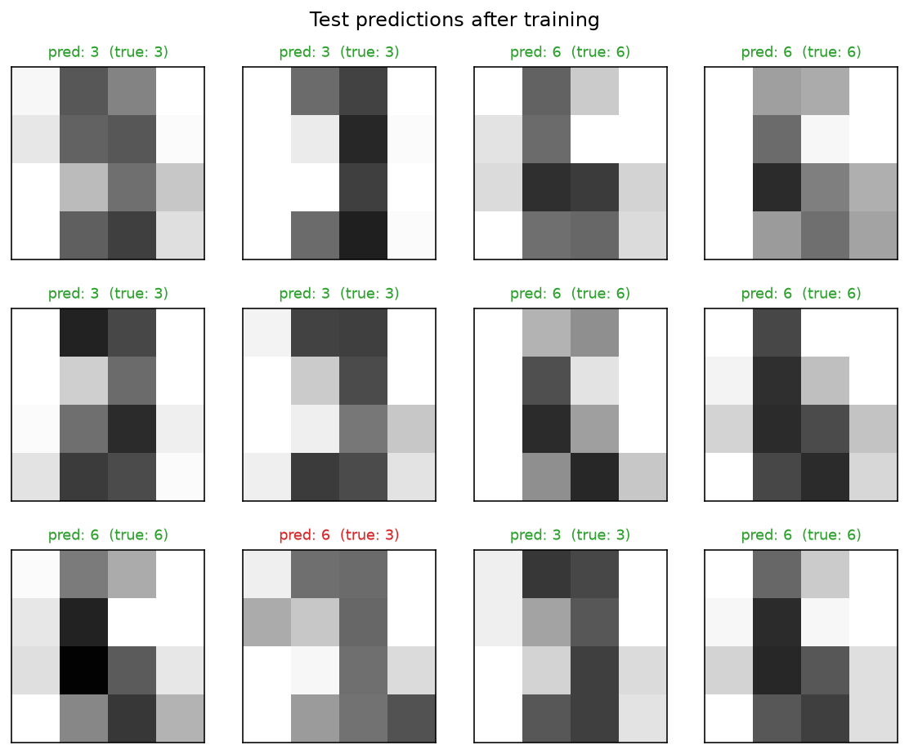

Recognize handwritten digits with a quantum neural network¶
-
Track
Algorithms
-
Downloads
Additional dependency
This tutorial requires scikit-learn, which is not installed with FatQat.
Install it with python -m pip install scikit-learn.
A quantum neural network (QNN) classifier is an ordinary parameterized function \(f(x;\theta)\) — the twist is that the function is evaluated by a quantum circuit. The input features \(x\) and the trainable weights \(\theta\) both enter the circuit as rotation angles, and the class scores are read off the final state as expectation values.
This tutorial trains such a classifier to tell the handwritten digits 3
and 6 apart, and it showcases the piece fatqat contributes beyond a plain
"build one circuit per sample" workflow: the circuit is built once as a
parameterized template, and a whole batch of inputs is evaluated with a
single run_sweep call.
The model¶
Each qubit alternates an encoding gate \(R_Y(x)\) with a trainable gate \(R_Z(\theta)\) over several rounds, entangled by a CX ring — the data re-uploading pattern of Pérez-Salinas et al. (arXiv:1907.02085). With four qubits and four rounds,
so the 16 features and 16 weights are consumed one per qubit per round. Re-uploading the same features in every round lets a small circuit fit a nonlinear decision boundary.
The readout follows Farhi & Neven (arXiv:1802.06002): measure the four single-qubit expectations \(\langle Z_q\rangle\) and fold them into two class logits,
Training minimizes the mean cross-entropy \(-\frac{1}{N}\sum_i \log p_i(\text{label}_i)\) with the gradient-free COBYLA optimizer — the loss is a black box, so no circuit differentiation is needed.
The data are the 8x8 handwritten digits bundled with scikit-learn. Once that package is installed, the dataset is available locally, so the tutorial needs no external data download. Every source of randomness is seeded.
Data: two classes of small digits¶
The 3-vs-6 subset is shuffled with a seeded generator and each 8x8 image is average-pooled to 4x4 — one feature per qubit per round. Pixel values (0–16) are scaled to angles in \([0, \pi]\), so a blank pixel encodes as the identity rotation \(R_Y(0) = I\) and brightness order survives the \(\cos\) in \(\langle Z\rangle = \cos x\) of a lone \(R_Y(x)\).
import matplotlib.pyplot as plt
import numpy as np
from scipy.optimize import minimize
from sklearn.datasets import load_digits
import fatqat as fq
import fatqat.operations as ops
NUM_QUBITS = 4
NUM_ROUNDS = 4 # 4 rounds x 4 qubits consume the 16 pooled pixels
NUM_PARAMS = NUM_QUBITS * NUM_ROUNDS
digits = load_digits()
subset = (digits.target == 3) | (digits.target == 6)
images = digits.images[subset]
labels = (digits.target[subset] == 6).astype(int) # 0 for "3", 1 for "6"
rng = np.random.default_rng(0)
order = rng.permutation(len(labels))
images, labels = images[order], labels[order]
pooled = images.reshape(-1, 4, 2, 4, 2).mean(axis=(2, 4)) # 8x8 -> 4x4
features = pooled.reshape(-1, 16) / 16.0 * np.pi
N_TRAIN = 120
X_train, y_train = features[:N_TRAIN], labels[:N_TRAIN]
X_test, y_test = features[N_TRAIN:], labels[N_TRAIN:]
print(f"train {len(y_train)} samples, test {len(y_test)} samples")
Runtime result
train 120 samples, test 244 samples
This 4x4 pooling — not the original 8x8 scan — is what the circuit sees.
fig, axes = plt.subplots(2, 4, figsize=(8, 4.5))
for ax, image, label in zip(axes.ravel(), pooled[:8], labels[:8]):
ax.imshow(image, cmap="gray_r", vmin=0, vmax=16)
ax.set_title(f"true: {'6' if label else '3'}")
ax.set_xticks([])
ax.set_yticks([])
fig.suptitle("Model input: 4x4 average-pooled digits")
fig.tight_layout(h_pad=2.5)
Runtime result

The ansatz: one parameterized template¶
A ParameterVector is a group of named placeholders.
Gates added with placeholders instead of numbers produce a template:
a program whose structure is fixed but whose angles are bound later.
Binding always returns a new program and never mutates the template, so
one template serves every sample and every optimizer step.
FEATURES = fq.ParameterVector("features", NUM_PARAMS)
WEIGHTS = fq.ParameterVector("weights", NUM_PARAMS)
def build_template():
"""The data-re-uploading circuit, built once with placeholders."""
program = fq.Program(NUM_QUBITS)
for r in range(NUM_ROUNDS):
for q in range(NUM_QUBITS):
program.add(ops.RY(FEATURES[r * NUM_QUBITS + q]), q)
program.add(ops.RZ(WEIGHTS[r * NUM_QUBITS + q]), q)
for q in range(NUM_QUBITS):
program.add(ops.CX, (q, (q + 1) % NUM_QUBITS))
return program
template = build_template()
The template draws like any other program: each round applies RY(x)
then RZ(θ) on every wire and closes with the CX ring, repeated four
times.
figure = template.draw("matplotlib")
figure.set_size_inches(16, 4)
Runtime result

Evaluate a whole batch with one run_sweep¶
Within one optimizer step the weights are fixed, so they are bound once
with assign_parameters. The batch then sweeps only the features:
Estimator takes the two class observables alongside
the entire (N, 16) feature array and returns an ordered list of results
— one ordinary Result per sample. Each result contains
the two expectation values, which a short list comprehension collects into
the (N, 2) logit array. The parameters have become data: plain NumPy
arrays flowing through one call, instead of circuit structure rebuilt per
sample.
(In this fatqat version run_sweep still lowers and executes row by
row; the win today is the single-template workflow and one-call batch
interface, which is also where fused batched execution will land. The
estimator handles final-state evolution and observable contraction; see
interpreting results.)
LOGIT_OBSERVABLES = [
fq.Observable.from_sparse(
[("Z", (0,), 1.0), ("Z", (1,), 1.0)], num_qubits=NUM_QUBITS
),
fq.Observable.from_sparse(
[("Z", (2,), 1.0), ("Z", (3,), 1.0)], num_qubits=NUM_QUBITS
),
]
estimator = fq.Estimator(fq.simulator.Simulator(method="SV"))
def batch_logits(params, X):
"""Map a batch of samples to class logits with one sweep call."""
bound = template.assign_parameters({WEIGHTS: params})
results = estimator.run_sweep(
bound,
LOGIT_OBSERVABLES,
{FEATURES: X},
shots=0,
).result()
return np.array([result.get_expectation() for result in results]) # (N, 2)
A small check with random initial weights: the logits start near zero, as expected for an untrained circuit.
x0 = rng.uniform(-0.1, 0.1, NUM_PARAMS)
print("logits of the first three test images at initialization:")
print(batch_logits(x0, X_test[:3]))
Runtime result
logits of the first three test images at initialization:
[[-0.64301947 -0.56470818]
[ 0.01998678 -0.6551785 ]
[-0.52650945 1.05323401]]
Training¶
The loss is the mean softmax cross-entropy over the training batch. One
loss evaluation is one run_sweep call over all 120 training images.
def batch_loss(params, X, y, trace=None):
"""Mean softmax cross-entropy over a batch."""
logits = batch_logits(params, X)
shifted = logits - logits.max(axis=1, keepdims=True)
p = np.exp(shifted)
p /= p.sum(axis=1, keepdims=True)
loss = -np.log(p[np.arange(len(y)), y]).mean()
if trace is not None:
trace.append(loss)
if len(trace) % 25 == 0:
print(f"eval {len(trace):4d} train loss {loss:.4f}")
return loss
trace = []
result = minimize(
batch_loss,
x0,
args=(X_train, y_train, trace),
method="COBYLA",
options={"maxiter": 200, "rhobeg": 0.5},
)
print(f"final train loss {result.fun:.4f} after {len(trace)} evaluations")
Runtime result
eval 25 train loss 0.4741
eval 50 train loss 0.4443
eval 75 train loss 0.4269
eval 100 train loss 0.4211
eval 125 train loss 0.4136
eval 150 train loss 0.4060
eval 175 train loss 0.4008
eval 200 train loss 0.3937
final train loss 0.3937 after 200 evaluations
fig, ax = plt.subplots(figsize=(7, 4))
ax.plot(trace)
ax.set_xlabel("loss evaluation")
ax.set_ylabel("mean cross-entropy")
ax.set_title("COBYLA training trace")
fig.tight_layout()
Runtime result

Evaluation¶
The trained weights are evaluated on the held-out test split — again with a single sweep over the whole batch.
test_logits = batch_logits(result.x, X_test)
test_accuracy = (test_logits.argmax(axis=1) == y_test).mean()
print(f"test accuracy {test_accuracy:.1%} on {len(y_test)} images")
Runtime result
test accuracy 97.1% on 244 images
A sample of test predictions; wrong calls are marked in red.
fig, axes = plt.subplots(3, 4, figsize=(8, 6.5))
offset = N_TRAIN # pooled/labels indices corresponding to X_test
for k, ax in enumerate(axes.ravel()):
prediction = test_logits[k].argmax()
correct = prediction == y_test[k]
ax.imshow(pooled[offset + k], cmap="gray_r", vmin=0, vmax=16)
ax.set_title(
f"pred: {'6' if prediction else '3'} (true: {'6' if y_test[k] else '3'})",
color="tab:green" if correct else "tab:red",
fontsize=9,
)
ax.set_xticks([])
ax.set_yticks([])
fig.suptitle("Test predictions after training")
fig.tight_layout(h_pad=2.5)
Runtime result

Where to go from here¶
- the Program guide introduces parameter binding; the simulation guide covers sweeps, and interpreting results covers exact and sampled expectation values.
- Natural extensions: more rounds or qubits, a noise model passed to the
simulator, or sampled (
shots > 0) expectations to study shot noise on the training curve.